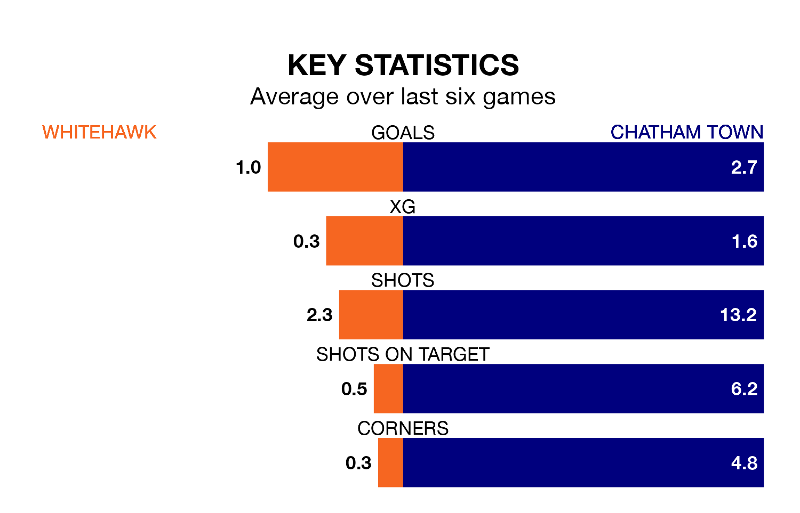

Chatham Town travel to the Enclosed Ground for Saturday's match against Whitehawk looking to bounce back from defeat last time out in Isthmian Premier Division.
Chatham, who sit second in the league after 27 games, fell to a 3-2 home defeat to Hashtag United on Tuesday.
They face a Whitehawk side who also lost their last match, a 2-0 defeat to Cheshunt, and who sit 15th in the table.
With 55 goals in 27 games so far this season, Chatham are the league's second-highest scorers with 2.0 goals per game. And they are conceding fewer than average, letting in 37 goals at a rate of 1.4 per game.
Whitehawk, meanwhile, are below average scorers, with 1.4 goals per game, compared to a league average of 1.6. They have conceded 1.6 goals per game.
The Hawks are in disappointing form in Isthmian Premier Division, with two wins and four losses from their last six games.
With four wins and two losses over that period, Town's form is much better – they have taken 12 points from 18, compared to the hosts' six.
In the last three years, Whitehawk and Chatham have played each other on three occasions. Whitehawk won one of them and Chatham the other.
Their last meeting was on November 11, when Chatham won 1-0 at home.
Updated: 10:40 (UTC), 01/02/24